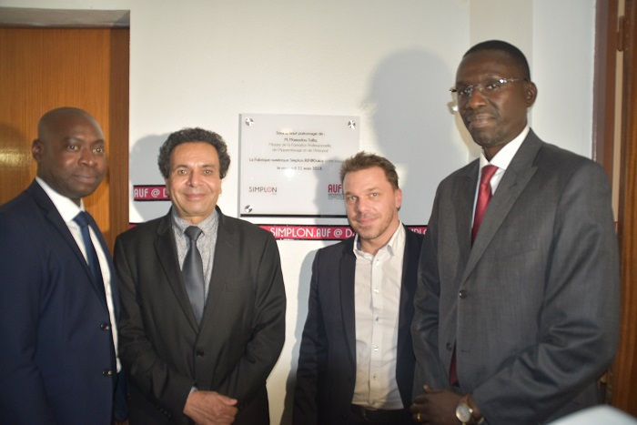

Un Peuple-Un But- Une Foi
Republique du Mali
Lycée Public Tagnè
LYCEE PUBLIC TAGNE
LA REUSSITE EST AU BOUT DE L'EFFORT

Informations
Connexion
Le Lycée Public Tagnè m’a permit de m’integrer facilement à l’université
grâce aux différentes activités pedagogique et extra-pedagogique. L’enseignement
au sein de cette école est à un niveau supérieur. Je vous le recommande.
Le premier Ministre lors de sa visite a souligné être passé par le Lycée Public
Tagnè et voilà ou il en est de nos jours.
L’informaticien que je suis est passé par le Lycée Tagnè. L’accent était mis sur les
mathématiques et la gestion de projet surtout la méthode Agile, methode avec l
aquelle je travaille sur tous mes projets. Force aux elèves et enseignants de cet ecole.
Issa Mariko
Pr Choguel Maiga
Hamidou Togo
Activités
Actualités